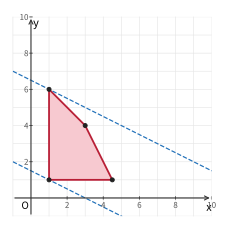
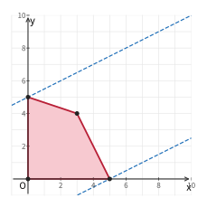
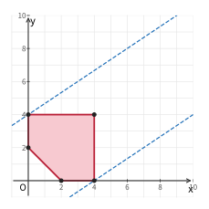

別冊練習問題 4 の解答 領域における1次式の最大・最小
(1) 実数 \(x,\ y\) が \[\begin{cases}x\geqq 1\\ y\geqq 1\\ x+y\leqq 7\\ 2x+y\leqq 10\end{cases}\] を満たすとき、\(x+2y\) の最大値・最小値と、そのときの \((x,y)\) を求めよ。
領域を図示する
連立不等式の表す領域は、下の図の多角形（境界を含む）。

頂点の座標を求める
隣り合う境界線の交点を連立方程式で求める。頂点は
\[(1,\ 1),\ (\dfrac{9}{2},\ 1),\ (3,\ 4),\ (1,\ 6)\]目的の式を \(k\) とおく
\(x+2y=k\) とおくと、これは傾き \(- \dfrac{1}{2}\) の直線。\(k\) は直線の切片に比例するので、この直線を平行移動して、領域と共有点をもつ範囲で \(k\) の最大・最小を調べる。
最大・最小は頂点でおこる
直線が領域を通る範囲の端は、必ず頂点を通るときである。各頂点での値を計算する。
\[(1,1):\ 3,\quad (\dfrac{9}{2},1):\ \dfrac{13}{2},\quad (3,4):\ 11,\quad (1,6):\ 13\]答え
最大値 \(13\)（\((1,6)\)）、最小値 \(3\)（\((1,1)\)）。
【答案】
\[\text{最大値 }13\ (1,6),\quad \text{最小値 }3\ (1,1)\]答
(2) 実数 \(x,\ y\) が \[\begin{cases}x\geqq0\\ y\geqq0\\ 2x+y\leqq 10\\ x+3y\leqq 15\end{cases}\] を満たすとき、\(x-2y\) の最大値・最小値と、そのときの \((x,y)\) を求めよ。
領域を図示する
連立不等式の表す領域は、下の図の多角形（境界を含む）。

頂点の座標を求める
隣り合う境界線の交点を連立方程式で求める。頂点は
\[(0,\ 0),\ (5,\ 0),\ (3,\ 4),\ (0,\ 5)\]目的の式を \(k\) とおく
\(x-2y=k\) とおくと、これは傾き \(\dfrac{1}{2}\) の直線。\(k\) は直線の切片の符号が逆に比例するので、この直線を平行移動して、領域と共有点をもつ範囲で \(k\) の最大・最小を調べる。
最大・最小は頂点でおこる
直線が領域を通る範囲の端は、必ず頂点を通るときである。各頂点での値を計算する。
\[(0,0):\ 0,\quad (5,0):\ 5,\quad (3,4):\ -5,\quad (0,5):\ -10\]答え
最大値 \(5\)（\((5,0)\)）、最小値 \(-10\)（\((0,5)\)）。
【答案】
\[\text{最大値 }5\ (5,0),\quad \text{最小値 }-10\ (0,5)\]答
(3) 実数 \(x,\ y\) が \[\begin{cases}x\geqq0\\ y\geqq0\\ -x-y\leqq -2\\ x\leqq 4\\ y\leqq 4\end{cases}\] を満たすとき、\(2x-3y\) の最大値・最小値と、そのときの \((x,y)\) を求めよ。
領域を図示する
連立不等式の表す領域は、下の図の多角形（境界を含む）。

頂点の座標を求める
隣り合う境界線の交点を連立方程式で求める。頂点は
\[(2,\ 0),\ (4,\ 0),\ (4,\ 4),\ (0,\ 4),\ (0,\ 2)\]目的の式を \(k\) とおく
\(2x-3y=k\) とおくと、これは傾き \(\dfrac{2}{3}\) の直線。\(k\) は直線の切片の符号が逆に比例するので、この直線を平行移動して、領域と共有点をもつ範囲で \(k\) の最大・最小を調べる。
最大・最小は頂点でおこる
直線が領域を通る範囲の端は、必ず頂点を通るときである。各頂点での値を計算する。
\[(2,0):\ 4,\quad (4,0):\ 8,\quad (4,4):\ -4,\quad (0,4):\ -12,\quad (0,2):\ -6\]答え
最大値 \(8\)（\((4,0)\)）、最小値 \(-12\)（\((0,4)\)）。
【答案】
\[\text{最大値 }8\ (4,0),\quad \text{最小値 }-12\ (0,4)\]答